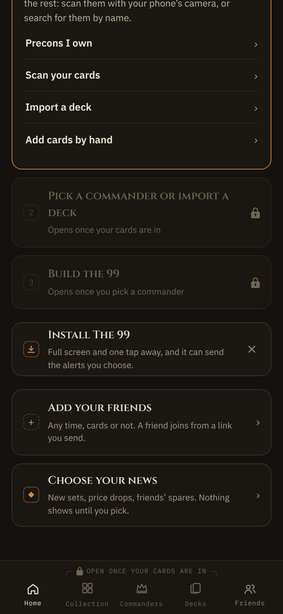
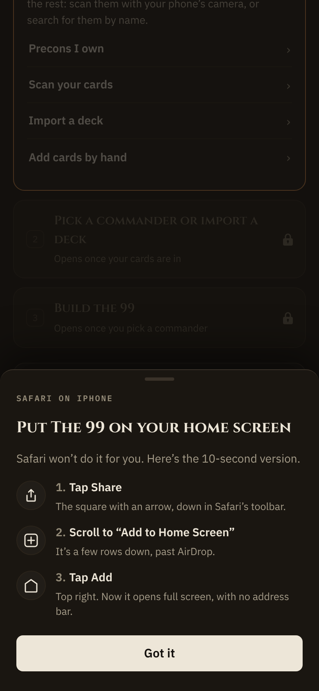
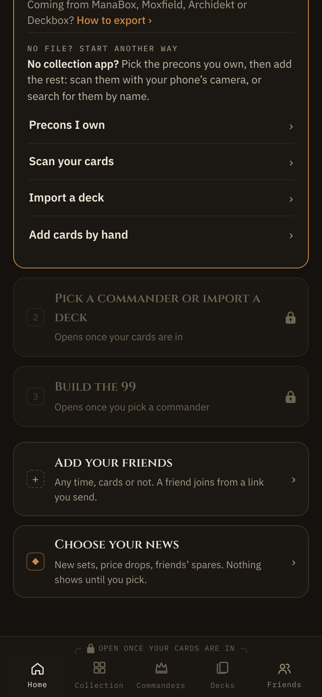

Hugh's note: what if they skip the tour? A player who leaves the tour before the Install stop (its ✕, or closing it early) gets R1's row in the first-run checklist. Anyone who saw the stop never gets it. It goes for good as soon as they select it or the header button, or tap its ✕.

Install The 99, under step 3, in the Friends row's live box, with the browser line from R1 (only Safari's mentions alerts). While it's on screen, the header button steps aside, so there's one ask at a time. Android gets the same row with its own line while a prompt is held.

The same shipped sheet (or Chrome's prompt on Android). Selecting it retires the row for good, and the header button comes back as the one place to install.

The checklist as shipped, with the header button under its shipped rules. The row's ✕ also counts as one header dismiss (quiet for 30 days). The row only ever lives on the first-run checklist, so it's gone once cards are in.